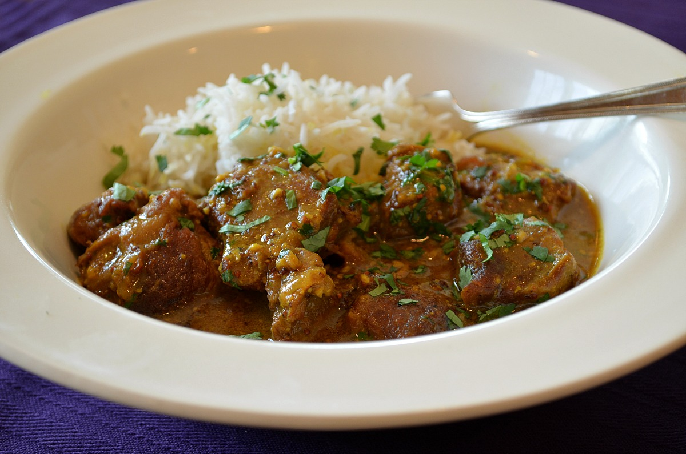

Lamb Vindaloo

The term Vindaloo derives from the Portugues popular dish Carne de Vinha d Alhos, a meat preparation usually made of pork with wine and garlic. The dish evolved into the Vindaloo curry family when it received the treatment from the Goan cuisine of adding plentiful amounts of traditional spices and using malt vinegar instead of red wine. Now Vindaloo or Vindalu (in Konkani) is a dish originated in Goa. Often in restaurants, the recipe of the traditional vindaloo is mistaken and prepared with chicken or lamb mixed with potatoes. Traditional Vindaloos do not include potatoes, the discrepancy arising because the word aloo means potato in hindi.
Lamb Vindaloo traditionally is a spicy hot dish made with coconut, vinegar and lots of hot red chilli peppers. Chili pepper was introduced by Portuguese traders during 16th century and with this came the development of Vindaloo dishes in Goa. Vindaloo is believed to be the oldest dish using chili pepper in India. Vindaloo is a popular dish in many parts of India.
The dish has gained popularity in Britain, Germany, the Middle East, Canada, Australia, New Zealand, and the United States, where it is almost universally featured on Indian restaurant menus. As most of the Indians do not prefer the pork meat we shall use the lamb meat for preparing the Lamb Vindaloo.